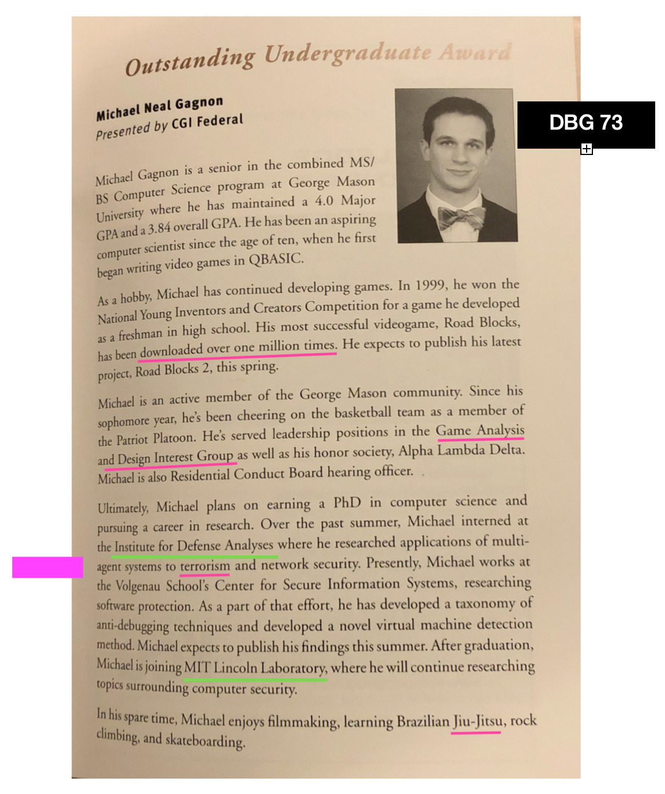
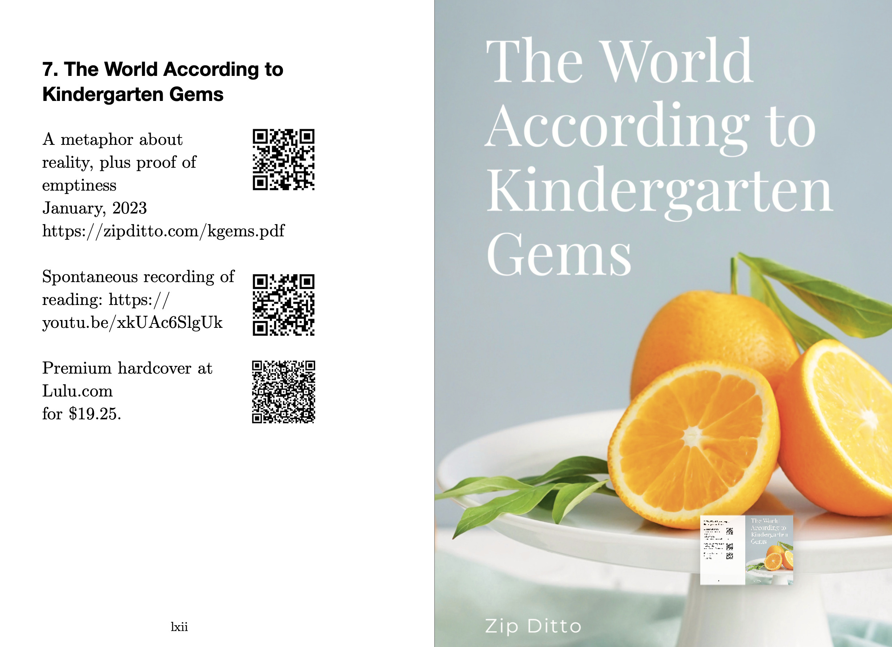
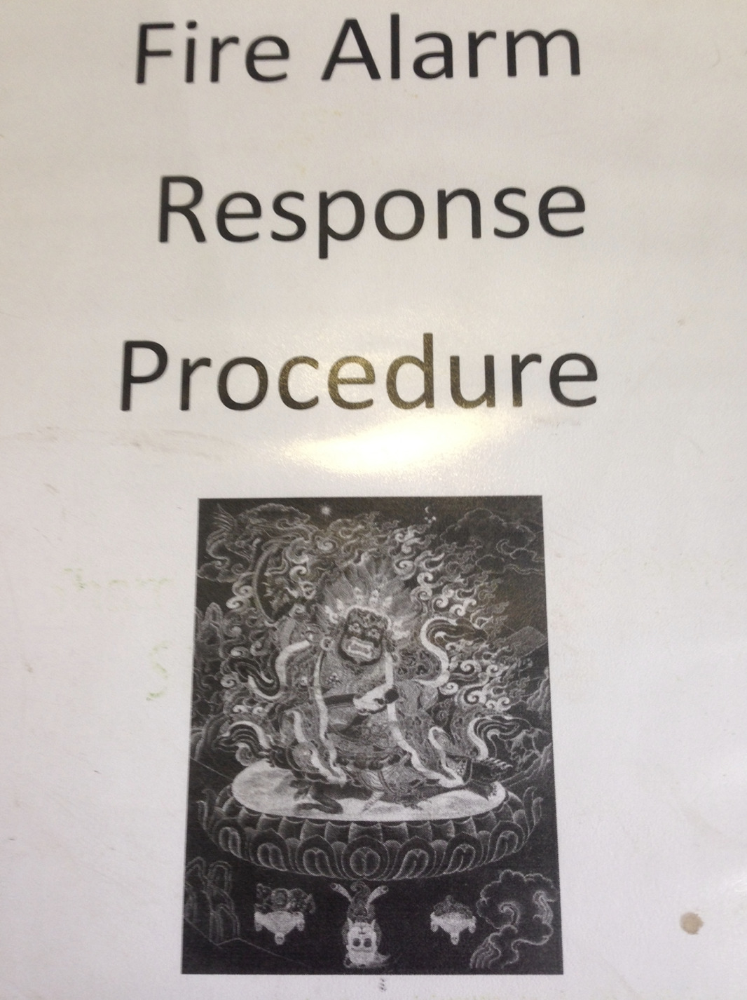
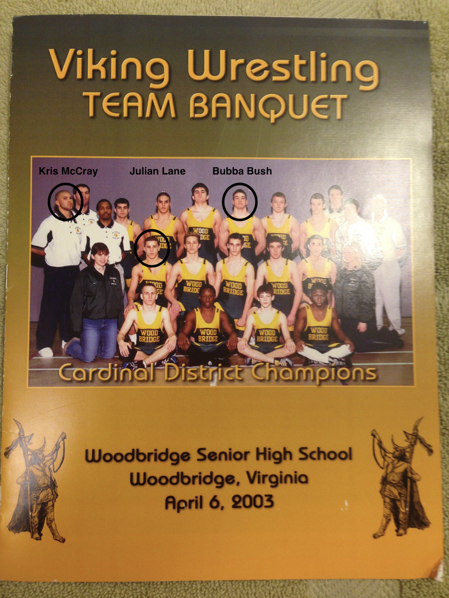
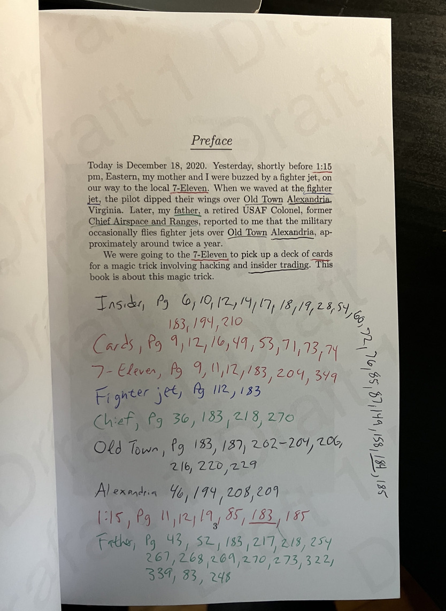

ALT text goes here? I don't know if alt-text readers display 'visually hidden' CSS.
Gluon Spoiler
Preface
Please allow me to attempt to capture your attention. We begin with a photograph of a gigababe and a gigadude.
This book, “Gluon Spoiler,” is a spoiler for the book Deluxe Beer Garden because it resolves the mysteries I sewed into DBG.
Gluon Spoiler also spoils many other mysterious books I have written. Herein, I simply make my intellectual canon as clear as possible, by providing entertaining references to my other books.
On with the entertainment!
I have a master’s degree from Harvard. I photoshopped the photo for my student ID, before I submitted it. Lol!
I claimed to be involved in espionage in my book “Deluxe Beer Garden,” and other books, too.

v
I was the student speaker at GMU’s Engineering School’s convocation ceremony in 2007.
I was an Associate Staff member at MIT Lincoln Laboratory (LL).
vi
I once hacked the United States nuclear-warfare defense system, during a live-fire war game (ZBG 219). https://archive.ll.mit.edu/publications/Annual_Report_2010.pdf. See: Towards Net-Centric Cyber Survivability for Ballistic Missile Defense

vii
I presented my report on the live-fire war game in Prague, in 2010 (ZBG 219). To prepare for the trip to Prague I received some SERE training (Survival, Evasion, Resistance, Escape, ZBG 219). The trip to Prague doubled as my honeymoon. Here are some photos from my honeymoon.

viii
ix
Anyway, I printed “Zen Beer Garden,” Draft 1 (the only draft) in December 2020. I printed “Deluxe Beer Garden” about a month later, which essentially represents the second draft of Zen Beer Garden.
Then, about a year later, I condensed it, made it much more fictional, and published it as a highly fictional version, titled “Mutually Assured Espionage.”
MAE is available on the Web for free!
You can also purchase a high-quality, hardcover, collector’s edition at Lulu.com!
Anyway, you might be wondering what MIT has to do with espionage and live-fire nuclear war games. I shall explain it clearly now (it’s been an open secret for a long time).
Early in the Cold War the US Military and Congress collaborated to establish new private organizations controlled funded by the Federal Government and US Military. They are known as FFRDC’s (Federally Funded Research & Development Centers). Lincoln Laboratory (LL) is an FFRDC within MIT. LL is physically located within an Air Force base about 20 minutes north of MIT’s main campus.
I first began doing counter-terrorism work at another FFRDC, called IDA, the Institute for Defense Analyses, as an intern during college. Here’s proof:

Anyway, ZBG and DBG is old news. That was years ago.
What have I been doing lately? Well, I’ve been dabbling in international arms dealing.
But, to explain my role in international arms dealing, I must first tell you a little bit about my research that began at MIT, continued at Harvard, matured for DARPA, then simmered for 10 years in Buddhism.
For MIT, Harvard, and DARPA, I studied and practiced the offense and defense of computer overloads, specializing in “high-density attacks”.
Then, I studied and practiced Buddhism, and realized you can treat human brains as if they were computers, and I studied and practiced the offense and defense of “brain overloads.”
Good news: I believe my latest defensive technique succeeds at protecting human brains. I call it the Zen Lemonade Garden, and you can read about it in my book Magic & Rationality, for free on the Web.
Also, you can buy a paperback draft on Lulu.com. I am donating 20% of my personal 2023 revenue from all book sales to the Electronic Frontier Foundation (EFF) and the ACLU (American Civil Liberties Union.)

Anyway, last year (2022), I submitted a business proposal to an employee at a large corporation to fund me to develop fake cyber weapons.
The concept was that the fake weapons would be advertised on criminal markets to fuck with people who were trying to fuck with America.
But, here’s the catch. I’ve been playing all sides, all along, and this is where proof-of-work steganography comes in handy: I can prove I’ve been playing all sides, all along by helping you “decrypt” my intellectual canon.
First, I provide some evidence I’ve been dabbling in international arms dealing, then I give some references that help prove I’ve been playing all sides, all along, then I share my motivation for playing all sides, all along.
First, here’s some evidence I’ve been dabbling in international arms dealing. It’s written in coded language.








